Présentation du projet
Ce projet a été réalisé dans le cadre de mon BTS, sur une durée de quatre mois. Il s'agissait d'un travail en équipe de quatre personnes, ayant pour objectif la conception d'un système d'arrosage intelligent et connecté pour un potager pédagogique. Ce système devait fonctionner de manière autonome, notamment pendant les vacances scolaires, période durant laquelle le personnel n'est pas présent sur site.
Objectifs
- Assurer un arrosage régulier du potager même en l'absence de personnel.
- Minimiser la perte des cultures.
- Permettre un pilotage à distance simple et sécurisé.
Fonctionnalités principales
- Mode automatique basé sur les capteurs et les prévisions météo.
- Contrôle manuel à distance via l'interface web ou l'application mobile.
- Affichage des données en temps réel sur site via une matrice LED.
Technologies utilisées
Matériel : ESP32, capteurs d'humidité, de débit et de niveau d'eau, pompe à eau, matrice LED (Hub75)
Logiciel :
- API Node.js (Express), WebSocket, MQTT
- Base de données InfluxDB (données temporelles)
- Infrastructure : Docker, Nginx, hébergement sur DigitalOcean
- Sécurisation : chiffrement SSL/TLS avec Certbot
Mes contributions
J'ai été en charge du développement de l'API sécurisée, qui constitue le cœur de communication du système. Mon travail a couvert :
- la réception et le traitement des données provenant des capteurs,
- l'implémentation de la logique d'arrosage automatique,
- la communication avec l'interface web, l'application mobile, le serveur LoRaWAN et la base de données,
- l'intégration de WebSocket pour le temps réel.
J'ai également mis en place les mécanismes de sécurité, incluant l'authentification par token et le chiffrement SSL.
Galerie du projet

 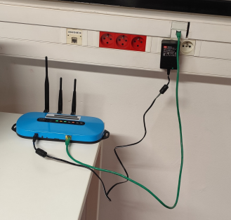
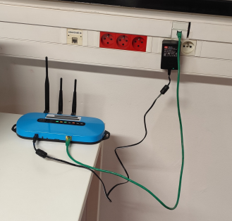
 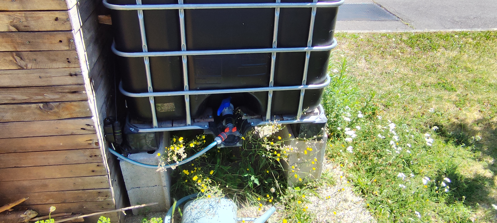
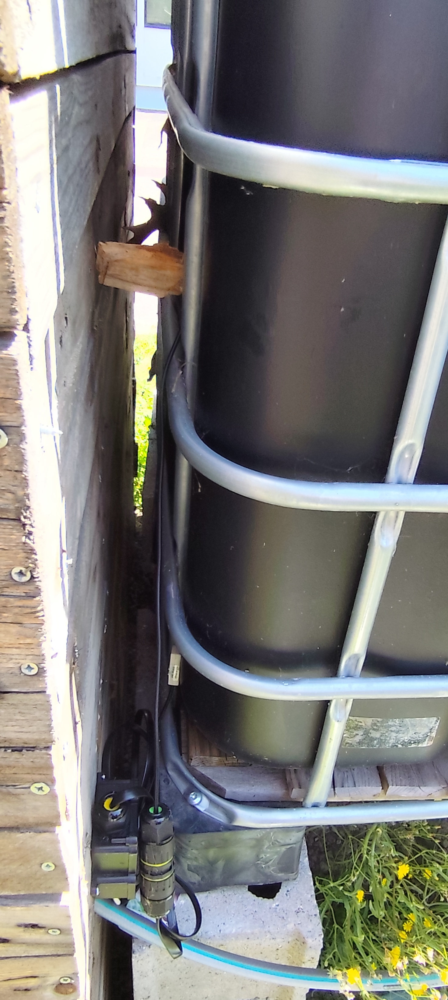
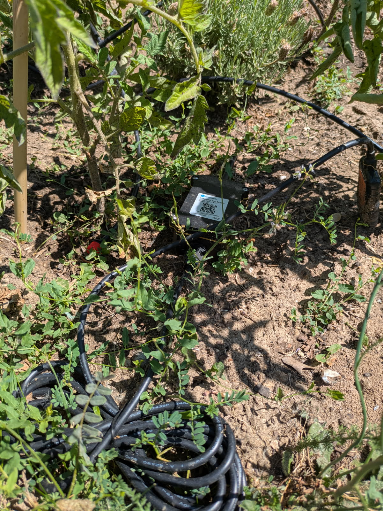
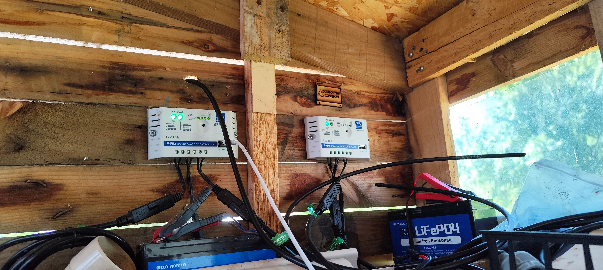
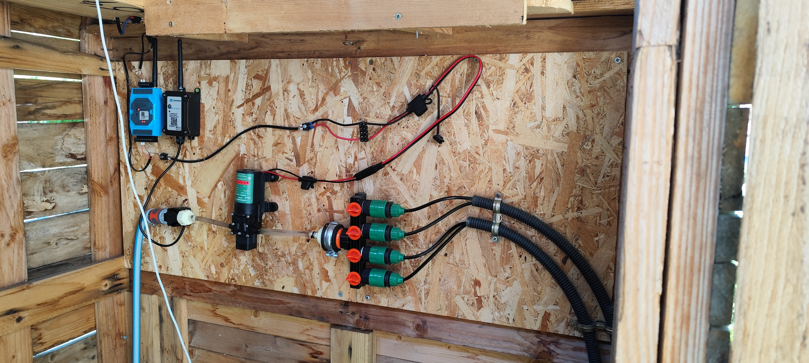
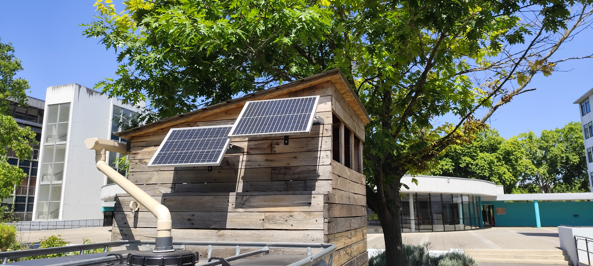
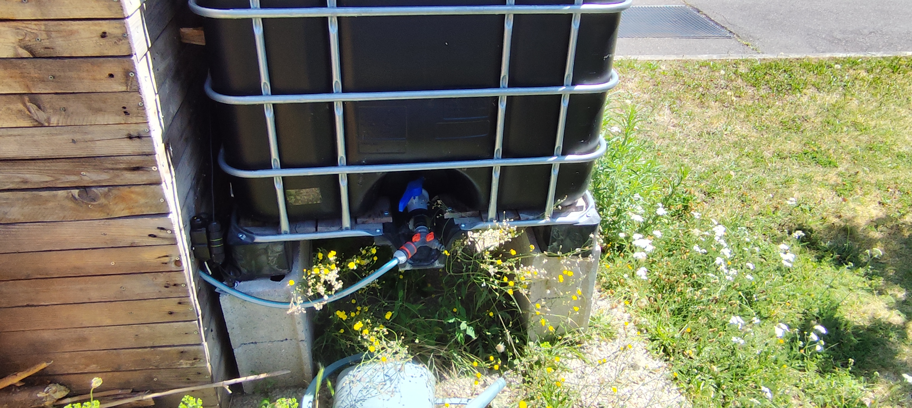
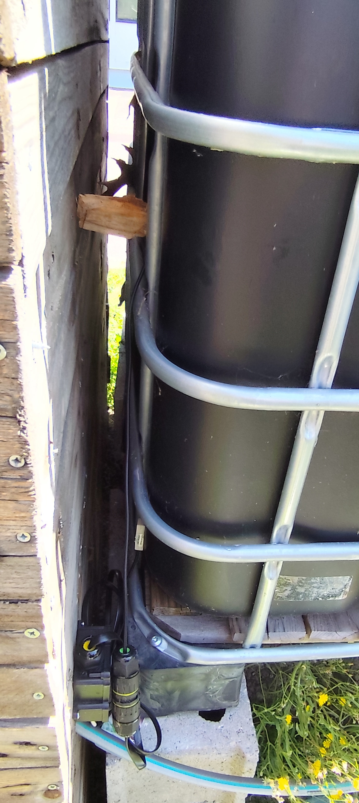
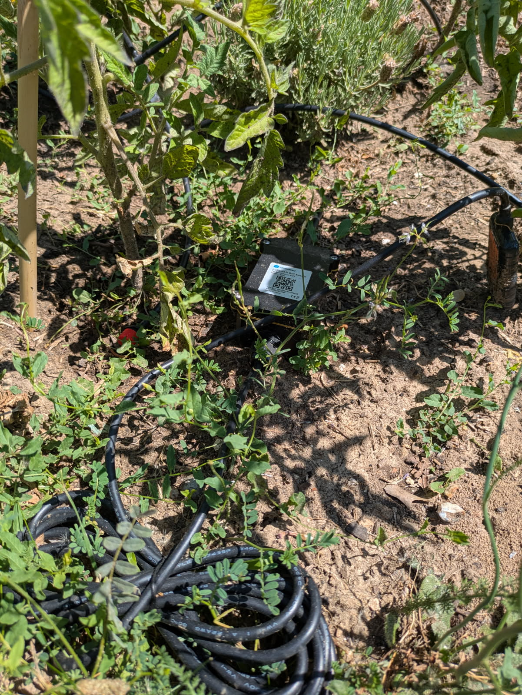
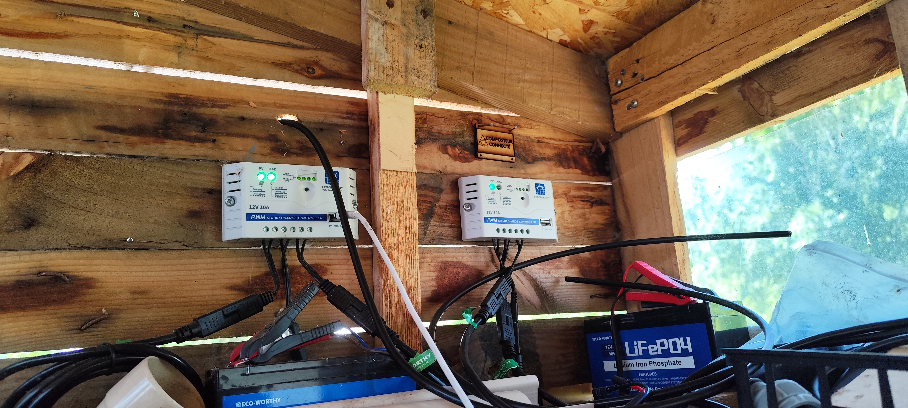
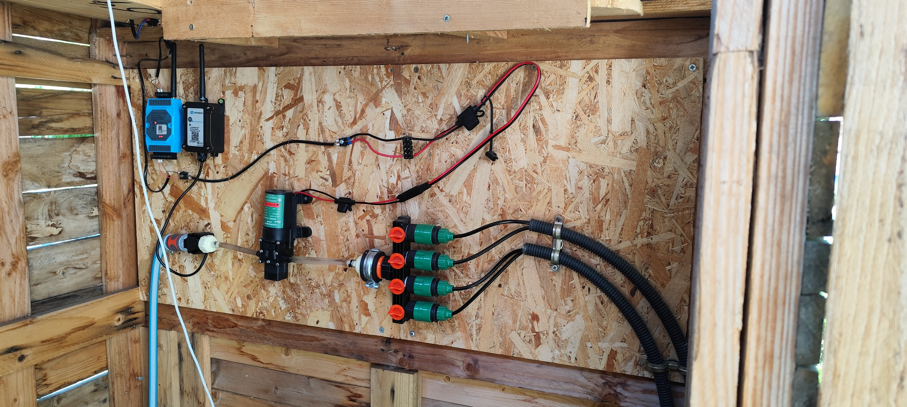
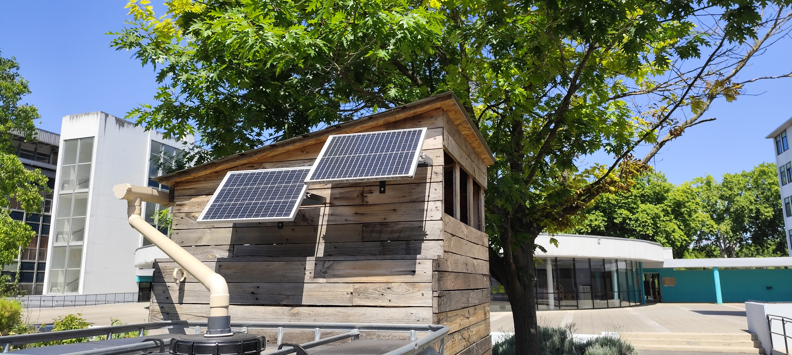


Interface web / mobile
Liens et ressources
Rapport de projet (PDF)
Des modifications ont été apportées après la remise de ce rapport.